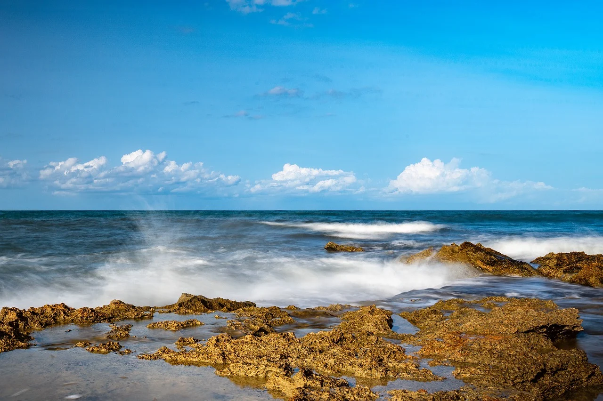
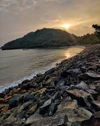
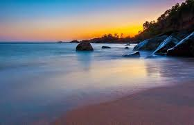
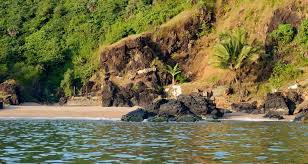
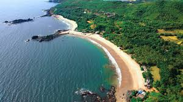
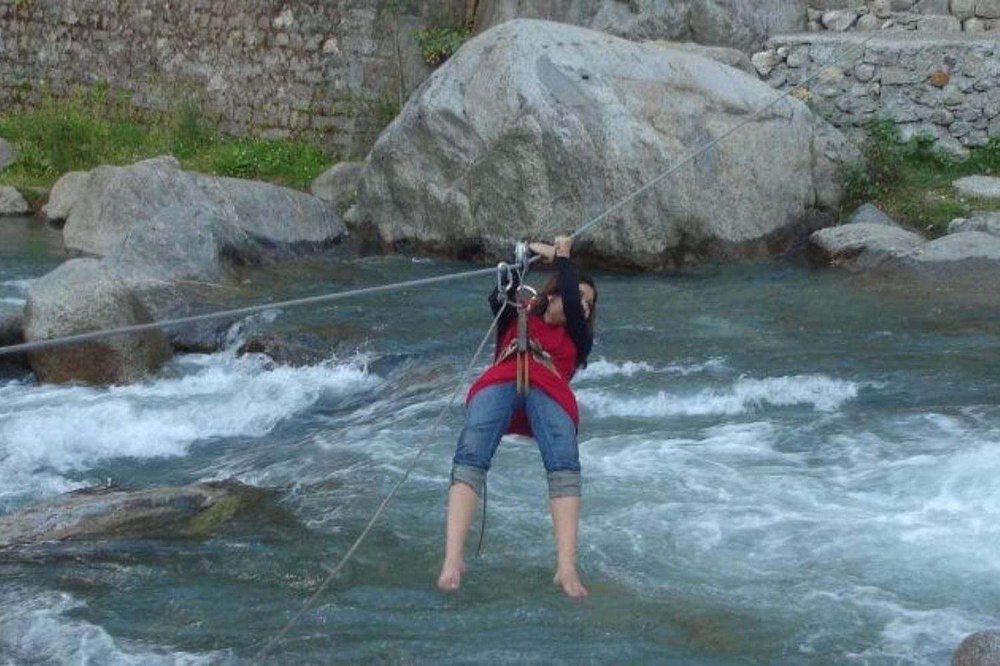

Gokarna: A Tranquil Beach Getaway
Gokarna is a quaint town on the Arabian Sea, known for its beautiful beaches and serene atmosphere. Recently, I had the chance to explore this gem, and here are some highlights of my trip:
Gokarna is a quaint town on the Arabian Sea, known for its beautiful beaches and serene atmosphere. Recently, I had the chance to explore this gem, and here are some highlights of my trip:
Dandeli is a town situated in the Western Ghats of Karnataka, India. It's known for its dense forests, wildlife, and scenic beauty.
Day 1 of our trip began with the excitement of exploring some of Karnataka’s hidden gems. Our first stop was the serene Vibuthi Falls, followed by a visit to the iconic Murudeshwar Temple. The journey was filled with scenic landscapes, spiritual vibes, and unforgettable experiences.
We set out early in the morning to catch the beauty of Vibuthi Falls at its finest. Located amidst lush
greenery, Vibuthi Falls is a pristine waterfall that cascades down in multiple tiers, creating a
mesmerizing sight. The trek to the falls was an adventure in itself, as we navigated through dense
forests and crossed small streams.
As we approached the falls, the sound of cascading water grew louder, heightening our anticipation. The
sight that greeted us was nothing short of magical. The cool, clear water provided a refreshing respite
from the trek. We spent hours here, taking a dip in the natural pools and soaking in the serene
ambiance. The place was relatively untouched by commercial tourism, adding to its charm.
After a rejuvenating morning at Vibuthi Falls, we headed to the coastal town of Murudeshwar, home to the
famous Murudeshwar Temple. The temple, dedicated to Lord Shiva, is renowned for its
towering statue of Lord Shiva that stands at 123 feet, making it one of the tallest statues of Shiva in
the world.
The temple complex is set against the backdrop of the Arabian Sea, offering stunning views and a sense
of tranquility. As we entered the temple, the intricate carvings and architectural beauty left us in
awe. We participated in the rituals and spent some time meditating in the peaceful environment.

The temple is surrounded by a beautiful beach, making it an ideal spot for an evening stroll. We walked
along the shore, enjoying the cool breeze and the soothing sounds of the waves. The sunset painted the
sky with hues of orange and pink, creating a picturesque setting.
Before heading back, we indulged in some local delicacies at a nearby restaurant. The flavors were rich
and authentic, providing the perfect end to an eventful day.
Day 1 of our trip was a perfect blend of adventure, spirituality, and natural beauty. Vibuthi Falls
offered a refreshing escape into nature, while Murudeshwar Temple provided a serene spiritual
experience. The memories of this day will be cherished forever, setting a positive tone for the rest of
our journey.
Staytuned for more adventures as we continue to explore the beautiful landscapes and cultural heritage
of Karnataka!
After an exhilarating first day exploring Vibuthi Falls and Murudeshwar Temple, Day 2 was all about experiencing Gokarna's stunning coastline through an unforgettable beach trek. Our journey took us through five breathtaking beaches, each with its unique charm and beauty.
We began our trek early in the morning at Gokarna Beach. The beach, known for its golden sands and tranquil waters, provided a perfect starting point. The cool morning breeze and the sound of gentle waves set a peaceful tone for the day ahead. We took a moment to enjoy the serene surroundings before starting our hike along the coastal path.
Our first destination was Belekan Beach , a lesser-known gem that offers a secluded and pristine setting. The trek to Belekan was filled with scenic views of the Arabian Sea and lush green landscapes. Upon arriving, we were greeted by the calm and clear waters of Belekan, making it a perfect spot for a refreshing dip. The beach's untouched beauty and tranquility made it feel like a hidden paradise.
Next, we headed to Paradise Beach, also known as Small Hell Beach. This beach truly lived up to its name with its crystal-clear waters and untouched natural beauty. Accessible only by trekking or boat, Paradise Beach offered a sense of seclusion and peace. We spent some time swimming in the pristine waters and lounging on the soft sands, soaking in the serene atmosphere.
Continuing our trek, we reached Half Moon Beach , named for its crescent shape. The beach is accessible only by trekking or a boat ride, adding to its charm. The trail to Half Moon Beach was slightly challenging, but the stunning views and peaceful ambiance made it worth the effort. We enjoyed a leisurely lunch here, surrounded by the natural beauty and calm waters.
Our final stop for the day was the iconic Om Beach, named for its shape resembling the sacred 'Om' symbol. The beach is one of the most popular in Gokarna, known for its vibrant atmosphere and water sports activities. We indulged in kayaking and jet skiing, and later relaxed at one of the beachside shacks, savoring some delicious seafood. The sunset at Om Beach was a spectacular sight, casting a golden glow over the waters.
Day 2 was an adventure-packed day, filled with the beauty of Gokarna's beaches and the thrill of trekking
along the coastline. Each beach offered its own unique experience, from the tranquil Gokarna Beach to
the vibrant Om Beach. The journey was not just about reaching each destination, but also about the
scenic landscapes, friendly encounters, and unforgettable moments along the way.
We ended the
day with a sense of accomplishment and a heart full of memories, excited for the adventures that awaited
us in the days to come. Stay tuned for more stories from our journey!
After two days of exploring the serene beaches of Gokarna and soaking in the spiritual ambiance of Murudeshwar Temple, Day 3 was all about adrenaline-pumping water adventures in Dandeli. Nestled in the Western Ghats, Dandeli is renowned for its thrilling outdoor activities and breathtaking natural beauty. Our day was packed with excitement and adventure, making it an unforgettable experience.
Our day began with an early morning drive to the Kali River, known for its challenging rapids and scenic surroundings. White water rafting on the Kali River is a must-do activity for adventure seekers. After a safety briefing and gearing up, we set off on our rafting adventure. The rapids were exhilarating, and the pristine beauty of the river added to the thrill. The adrenaline rush of navigating through the rapids was unmatched, and we shared countless laughs and cheers along the way.
After the rafting adventure, we decided to try our hand at kayaking and canoeing. The calm sections of the Kali River provided the perfect setting for these activities. Kayaking allowed us to explore the river at our own pace, while canoeing offered a more relaxed experience. Paddling through the serene waters, surrounded by dense forests and the sounds of nature, was a truly peaceful experience.
Post-lunch, we headed to the Dandeli Adventure Camp for some high-flying excitement. Ziplining over the river was an incredible experience, offering a bird’s eye view of the stunning landscape below. The thrill of gliding through the air was exhilarating, and the breathtaking views made it even more special. Next, we tried river crossing, which involved using ropes to traverse the river. It was a challenging yet rewarding experience that tested our strength and coordination.
As the day wound down, we opted for a tranquil coracle ride on the river. Coracles are traditional round boats made of bamboo and are unique to the region. The slow drift along the river was a stark contrast to the day's earlier activities, allowing us to relax and soak in the beauty of the surroundings. During the ride, we spotted various birds and even caught a glimpse of some wildlife along the riverbanks.
As the sun set, we reflected on the incredible journey we had experienced over the past few days. From
the serene beaches of Gokarna to the adrenaline-filled adventures in Dandeli, every moment was filled
with excitement and wonder. We ended our trip with tired but happy smiles, grateful for the memories we
had made and the beautiful places we had explored.
This trip was a perfect blend of relaxation, adventure, and natural beauty. As we bid farewell to
Dandeli, we promised ourselves that we would return to explore more of Karnataka's hidden treasures.
Stay tuned for more adventures in the future, and thank you for joining us on this
unforgettable journey!